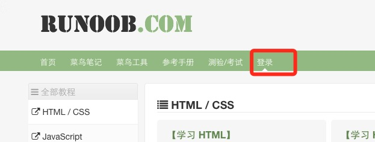
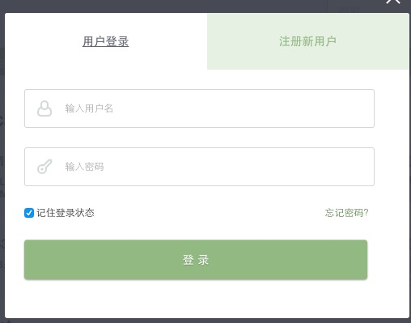
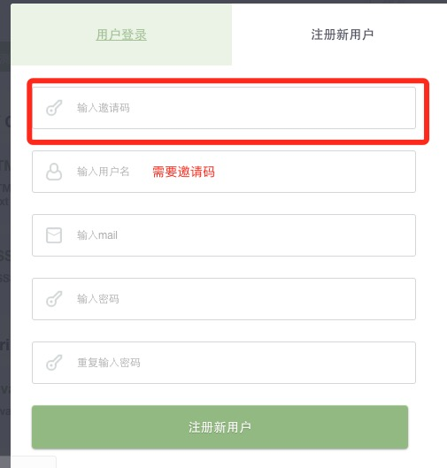
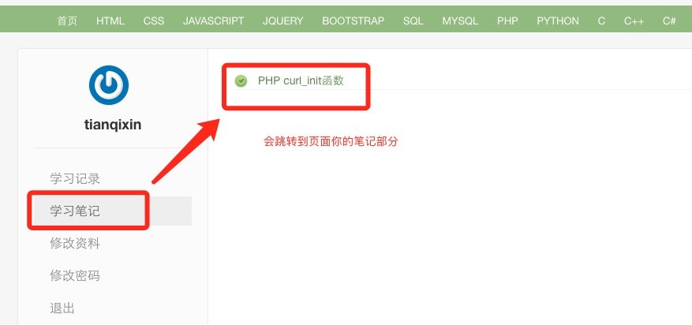
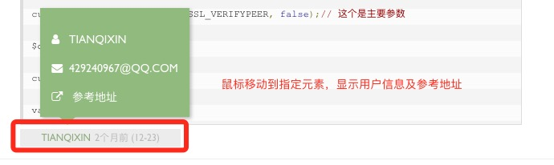
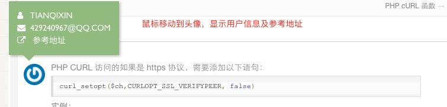
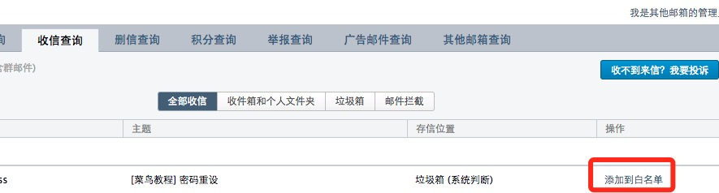

多くのユーザーから、個人の学習過程を記録するユーザーセンターが必要とのフィードバックをいただいたため、サンプルは正式にユーザーセンターを一般公開しました。ただし、現在も機能は改善中であり、不正登録を防ぐため、招待制の登録としています。
1、ログイン・登録画面
ログイン・登録には独立したページはなく、すべてポップアップで行います。ナビゲーションバーのログインボタンをクリックするとポップアップが表示されます。



2、ユーザーセンターページ
ユーザーセンターの現時点での機能は少なめで、多くの方が個人の学習記録を希望されていますが、現時点では10件のみ提供されており、超過分は自動的に置き換えられます。

ログイン済みのユーザーは記事タイトルに 番号マークが表示され、それをクリックして記録できます。
番号マークが表示され、それをクリックして記録できます。
記録に成功すると、マークは次のように置き換わります。

ユーザーノート機能
ログイン済みユーザーは記事の下部に個人の学習ノートを記録できます。ノートを提出すると、管理者の審査が必要です。質の高いノートは他のユーザーに共有され、個人センターの管理画面では自分のすべてのノート記録を確認できます。画面は以下の通りです。
ノートは本章の内容の拡張として位置付けられており、要件を満たさない場合は削除されます。
后台界面

前台界面

マウスをユーザーのアバターおよびニックネームに移動すると、ユーザーの詳細情報と参考アドレスが表示されます：


3、パスワード再発行について
パスワード再設定メールが届かない場合、メールシステムにブロックされている可能性が高いです。弊社のシステムメールをメールのホワイトリストに追加するか、ゴミ箱フォルダを確認してください。
以下はQQメールのスクリーンショットの説明です。

招待コードの取得方法
注意：登録にはあまり実用的な用途はありません！！！ 登録にはあまり実用的な用途はありません！！！ 登録にはあまり実用的な用途はありません！！！
-
1、提出したウェブサイトの三問題フィードバックを提出し、修正が行われた場合、これまでに提出された方はメールアドレスをお知らせください。確認しますので、条件に合う方には招待コードをお送りします。
2、分享两このサイトのチュートリアル記事のノートです。記事の下部にある"クリックしてノートを共有"或点击右侧"写笔记"編集して提出してください。
ノート内容の要件：記事内容の拡張、記事コード例の拡張および解説。
ノート形式の要件：簡単な説明＋コード例。
参考案例：http://www.example.com/php/func-curl_init.html#div-comment-639
<li>
<p>3、<strong>高品質なオリジナル</strong>のプログラミング技術記事を<strong>1</strong>本投稿し、審査を通過して公開されます。投稿先：<a href="../tougao.html" target="_blank" rel="noopener noreferrer">https://www.example.com/tougao</a>。</p></li>
上記のいずれかのタスクを完了した後、管理者にメールを送信することができます。429240967@qq.com、ベータテストの招待コードを申請します。